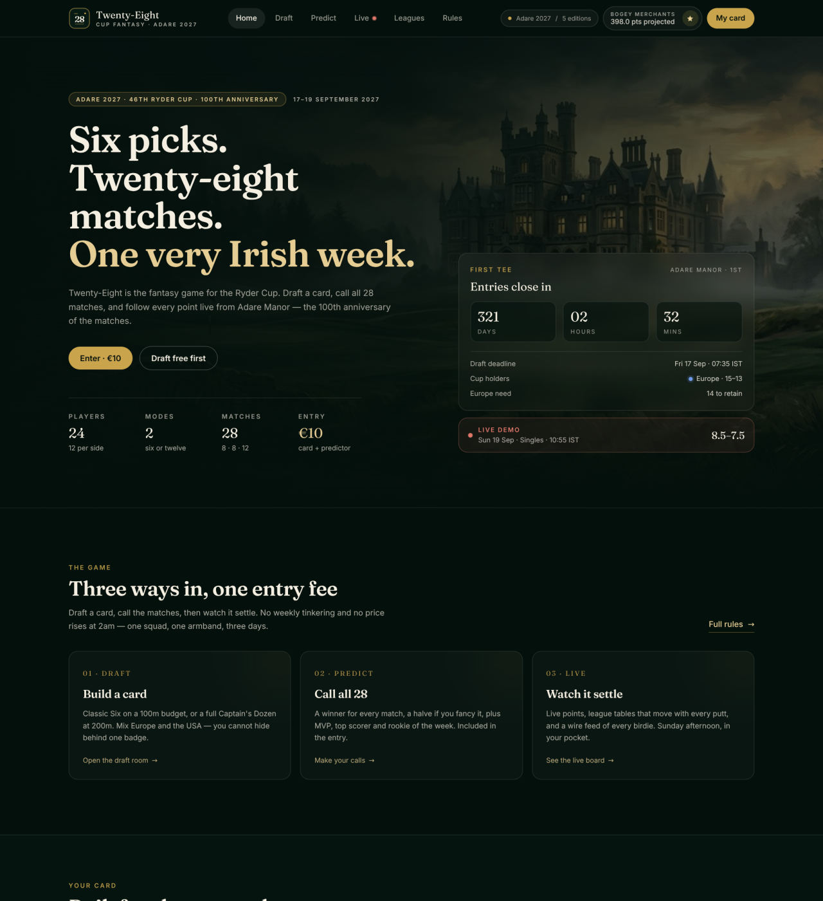
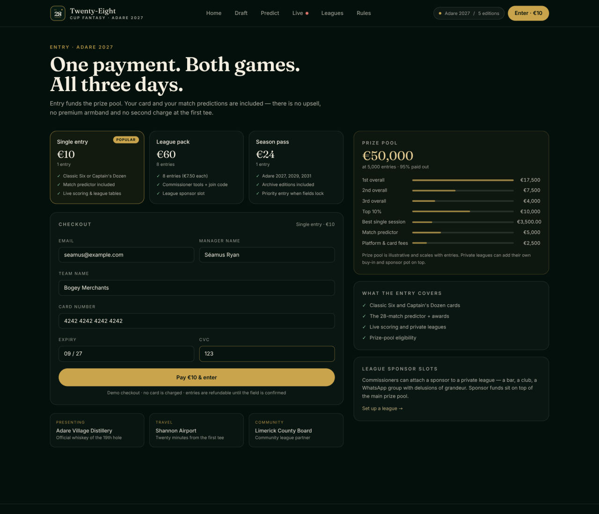
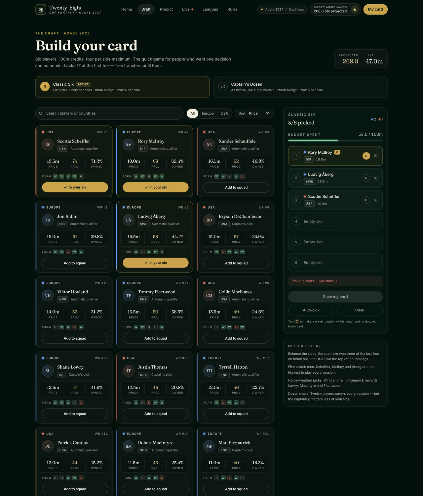
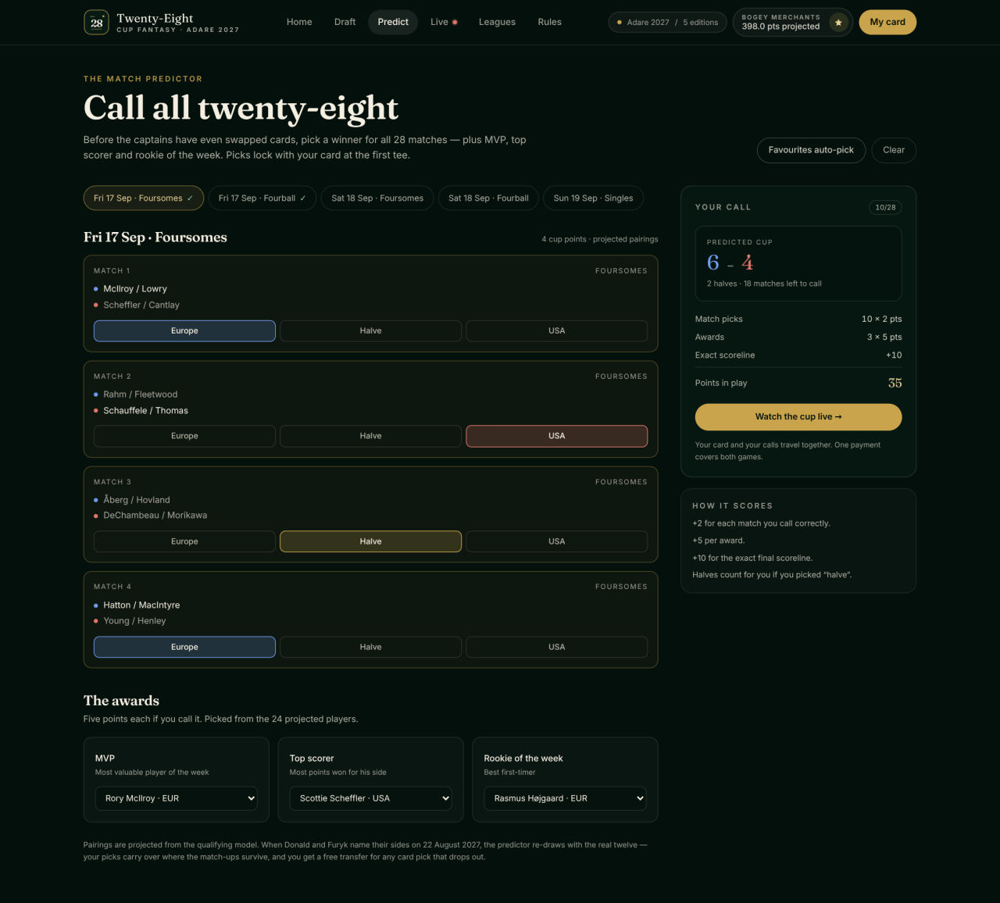
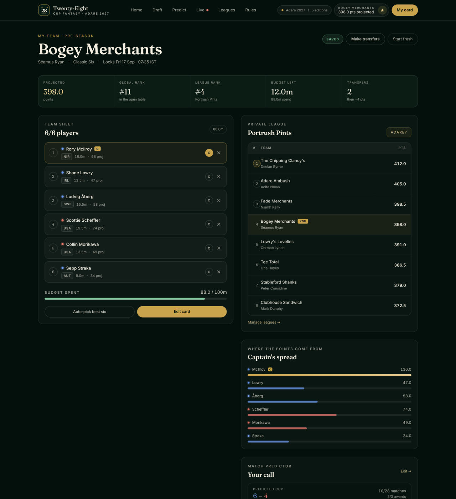
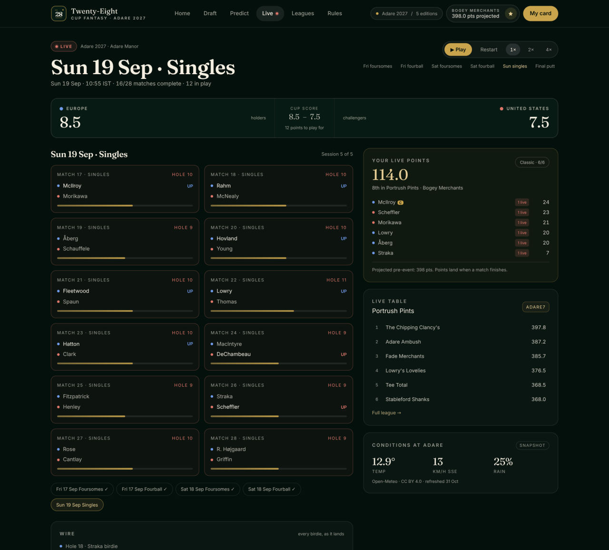
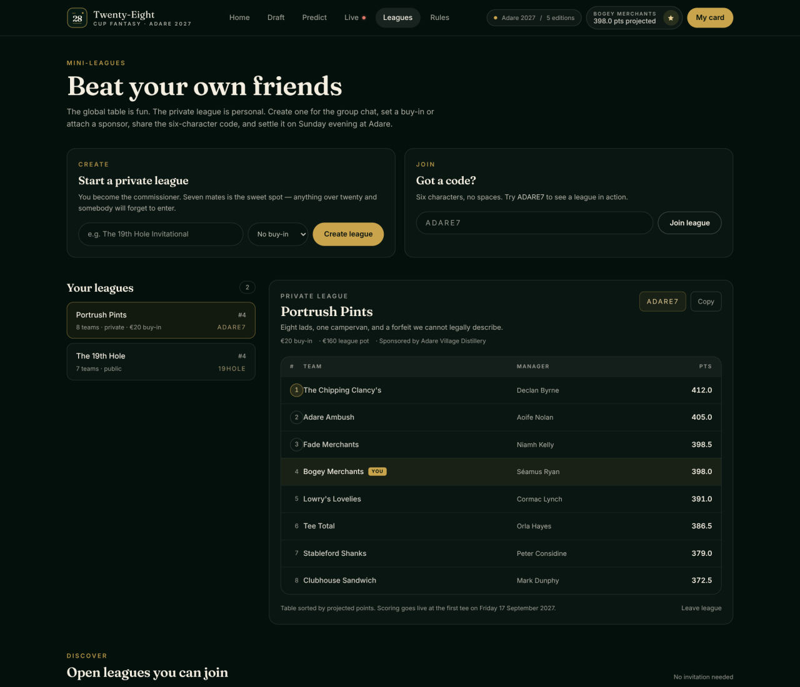
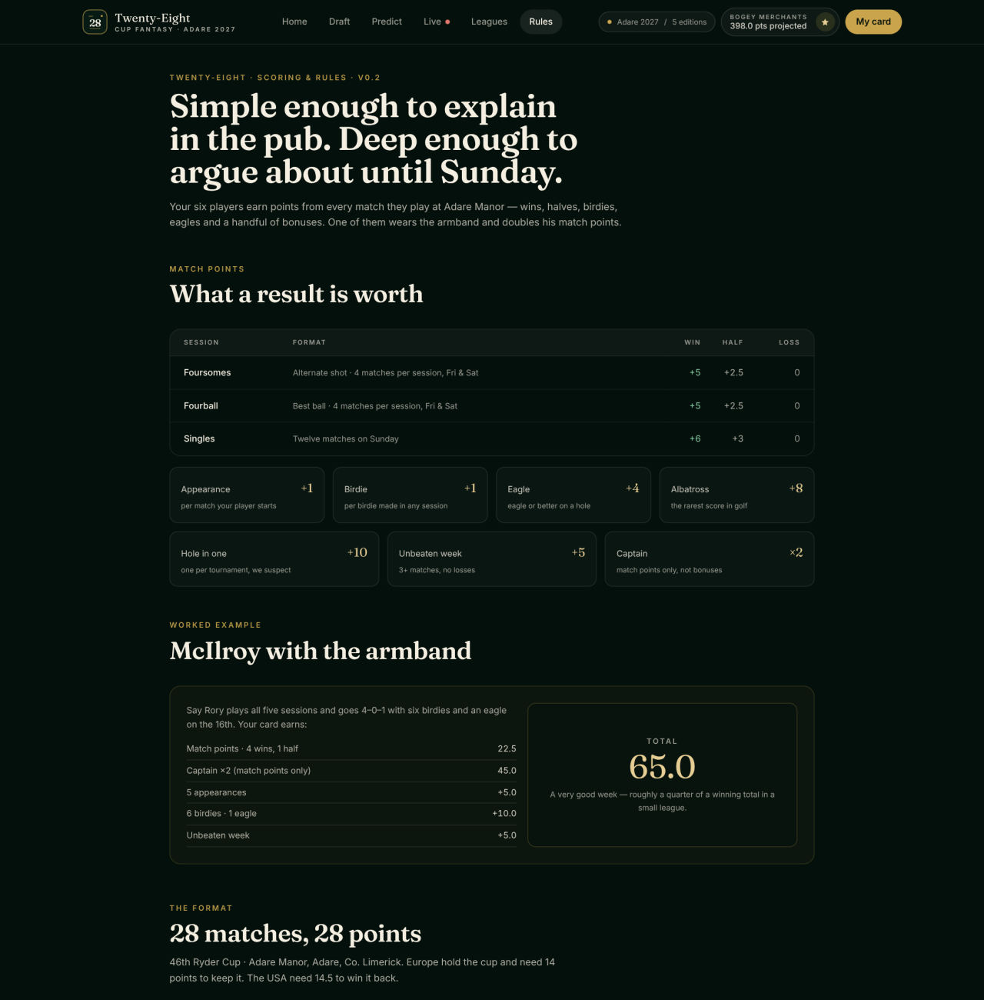

Cup fantasy · Adare 2027
Static preview · no server needed
Twenty-Eight is a fantasy platform for the Ryder Cup: one brand and one scoring engine, with a new edition for every cup. The first is Adare 2027 — Adare Manor, Co. Limerick, 17–19 September 2027, the 46th Ryder Cup and the 100th anniversary of the matches.
Captured from a production build with seven demo entries in the table — the same screens a visitor gets, not a mock-up.








A JSON database is possible — this page is reading a real
leaderboard.json exported from a running
instance (node scripts/snapshot.mjs). Seven entries, the finished cup, nothing
invented for the page. What a file cannot do is take an entry, save a draft or email you a
sign-in link, so the file sits beside the gallery rather than behind it.
| # | Team | Manager | Card | Calls | Total |
|---|---|---|---|---|---|
| Loading the JSON… | |||||
| — | |||||
Loading…
All of them keep the accounts, the database and the live table working.
Open the repository in a Codespace — the container installs, applies the schema, seeds seven entries and builds, then starts the app on port 3000 with a public URL you can send to anyone.
About four minutes. Nothing to sign up for beyond the GitHub account you already have.
One command installs Node, Postgres, the schema and the build — no admin rights.
git clone https://github.com/pronane/spring-android-rest-demo cd spring-android-rest-demo/adare-fantasy ./install.sh # Windows: .\install.ps1 ./start.sh # then open localhost:3000 npm run seed # seven demo entries in the table
Vercel's free tier runs the app and Neon's free Postgres holds it. Both are no-card sign-ups; the whole thing takes about ten minutes and the steps are in DEPLOY.md.
GitHub Codespaces is the other free option: open the repo in a codespace and forward port 3000 — no account anywhere else, and it sleeps when you close the tab.
No Postgres? It also runs on SQLite — one file, LIBSQL_URL=file:.data/twenty-eight.sqlite — or on Turso's free hosted SQLite. Same tables, same tests.
No deployment at all — a tunnel gives the machine in front of you a public URL in seconds:
./start.sh # in another terminal: cloudflared tunnel --url http://localhost:3000
Good for showing a few people today; it stops when your laptop does.